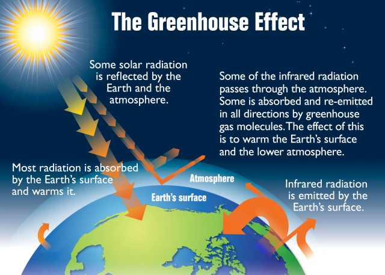

Emmanuel Kevin ID:10240573
The greenhouse effect is a process that occurs when gases in Earth's atmosphere trap the Sun's heat. This process makes Earth much warmer than it would be without an atmosphere.
The greenhouse effect is one of the things that makes Earth a comfortable place to live.

Carbon dioxide, (CO2), a colourless gas having a faint sharp odour and a sour taste. It is one of the most important greenhouse gases linked to global warming, but it is a minor component of Earth’s atmosphere (about 3 volumes in 10,000), formed in combustion of carbon-containing materials, in fermentation, and in respiration of animals and employed by plants in the photosynthesis of carbohydrates. The presence of the gas in the atmosphere keeps some of the radiant energy received by Earth from being returned to space, thus producing the so-called greenhouse effect.
Greenhouse gases have kept Earth's climate habitable for humans and millions of other species by trapping heat from the sun. However, those gases have become out of balance, threatening to significantly alter any living creature that can lives on this planet and where they can survive. Carbon dioxide levels in the atmosphere, the most hazardous and prevalent greenhouse gas, are at record highs. The main reason for the high amounts of greenhouse gases in the atmosphere is that humans have released them into the atmosphere by burning fossil fuels. Rather than allowing heat to escape into space, the gases absorb solar energy and hold it near to Earth's surface. The greenhouse effect is the result of this heat trapping.
Energy efficiency refers to using less energy to perform the same task - that is, eliminating energy waste. Energy efficiency brings a variety of benefits: reducing greenhouse gas emissions, reducing demand for energy imports, and lowering our costs on a household and economy-wide level. Two thirds of industrial energy consumption goes into heat applications, but the focus is often on electricity. With increasing energy intensity, the importance of heat applications for decarbonization in companies increases.
| Page | What this page is about |
|---|---|
| 2 | First Low carbon technology used to capture carbon or increase energy efficiency |
| 3 | Second Low carbon technology used to capture carbon or increase energy efficiency |
| 4 | Companies that use these technologies |
| 5 | The explanation of my thoughts about the impacts and benefits of these technologies to help to promote a green environment. |
| 6 | Enquiry form |
| 7 | Sign up page |